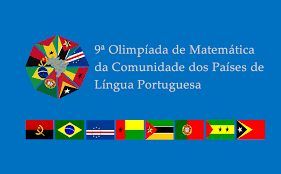
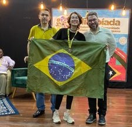

Matemática entre países de língua portuguesa
Olimpíada de Matemática da Comunidade dos Países de Língua Portuguesa
Uma competição internacional que reúne jovens estudantes de países lusófonos, promovendo matemática, intercâmbio educacional e cooperação entre diferentes comunidades.

História da competição
Uma olimpíada criada para aproximar estudantes do mundo lusófono
Esta competição teve início em julho de 2011, em Coimbra, com a designação de Olimpíadas de Matemática da Lusofonia.
No ano seguinte, a designação foi alterada para a atual em virtude do apoio expresso da Comunidade dos Países de Língua Portuguesa.
As OMCPLP são uma competição entre jovens estudantes de países de língua portuguesa.
Objetivos
Matemática como instrumento de desenvolvimento e cooperação
Ensino e talentos
Melhorar a qualidade do ensino e descobrir talentos em matemática, área fundamental para o desenvolvimento científico e tecnológico.
Estudo da Matemática
Fomentar o estudo da Matemática entre estudantes dos países lusófonos.
Troca educacional
Criar oportunidades para a troca de experiências educacionais nacionais.
União lusófona
Fortalecer a união e a cooperação entre os países lusófonos para a criação de instrumentos que permitam a participação em uma olimpíada internacional.
Histórico brasileiro
Participação Feminina do Brasil na OMCPLP
Duas edições com presença feminina nas equipes brasileiras.

11ª OMCPLP
Brasil · 2023
Equipe brasileira
-
Ouro
Guilherme Rene Cristiano São Paulo
-
Ouro
Lucas Kenji Fujibayashi São Paulo
-
Prata
Bruno Machado Feltran São Paulo
-
Prata
Julia de Paula Pessoa Leguiza Ceará

6ª OMCPLP
Brasil · 2016
Equipe brasileira
-
Ouro
Bernardo Peruzzo Trevisan Rio Grande do Sul
-
Prata
Marcelo Hippolyto de Sandes Ceará
-
Prata
Mariana Bigolin Groff Rio Grande do Sul
-
Prata
Bruno Barros de Souza Tocantins
Presença feminina
Julia Leguiza e Mariana Bigolin Groff
As duas estudantes registradas nesta página representam a participação feminina brasileira nas edições destacadas da OMCPLP.
Meninas olímpicas de hoje serão as mulheres nos espaços de decisão do amanhã.
Desde 2016 incentivando as meninas olímpicas.